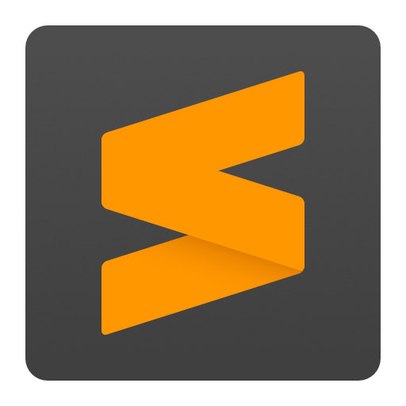
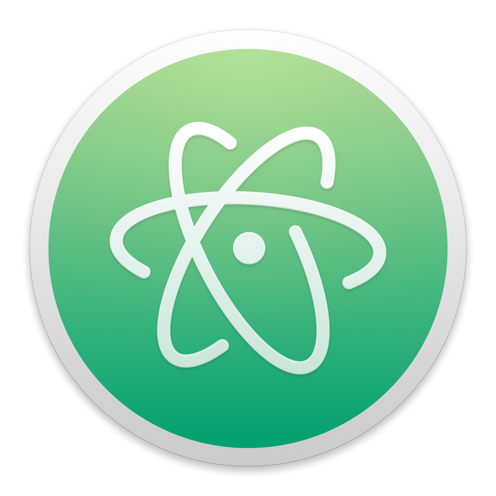

Code Editors
For Modern Developers
Write, edit, and organize your code more efficiently. Discover the most powerful editors used by developers worldwide.
Watch: Developer using a code editor
Why Use a
Code Editor?
A code editor is your most important tool as a developer. It's where you'll spend hours writing, debugging, and perfecting your code. The right editor can dramatically improve your productivity.
Boost Productivity
Auto-complete, snippets, and shortcuts save hours of typing
Catch Errors Early
Syntax highlighting and linting spot mistakes instantly
Extend with Plugins
Add features like Git integration, themes, and language support
Featured Code Editors
Discover the most popular code editors used by developers worldwide
Visual Studio Code
VS Code is a free, open-source editor developed by Microsoft. It's lightweight yet powerful, with built-in Git support and thousands of extensions.
Key Features:
- IntelliSense code completion
- Built-in debugging tools
- Extensive extension marketplace
- Integrated terminal
Best for: All Developers
Visit Official Website
Sublime Text
Sublime Text is a sophisticated text editor known for its speed and ease of use. Perfect for developers who want a fast, responsive editing experience.
Key Features:
- Lightning-fast performance
- Multiple selections
- Command palette
- Distraction-free mode
Best for: Speed-focused Developers
Visit Official Website
Atom
Atom is a free, open-source text editor by GitHub. Highly customizable and great for beginners who want to learn how editors work.
Key Features:
- Cross-platform support
- Built-in package manager
- Smart autocompletion
- File system browser
Best for: Beginners, Customizers
Visit Official WebsiteCode Editors Comparison
| Editor | Price | Ease of Use | Best For | Platform |
|---|---|---|---|---|
| VS Code | Free | ⭐⭐⭐⭐⭐ | All developers | Windows, Mac, Linux |
| Sublime Text | $99 (Free trial) | ⭐⭐⭐⭐ | Speed-focused developers | Windows, Mac, Linux |
| Atom | Free | ⭐⭐⭐⭐ | Beginners & customization | Windows, Mac, Linux |
Sources: Information from official websites, ChatGPT, Gemini, Claude, and Pexels for images.
Back to Home